UDN
Search public documentation:
MobileMaterialReferenceCH
English Translation
日本語訳
한국어
Interested in the Unreal Engine?
Visit the Unreal Technology site.
Looking for jobs and company info?
Check out the Epic games site.
Questions about support via UDN?
Contact the UDN Staff
日本語訳
한국어
Interested in the Unreal Engine?
Visit the Unreal Technology site.
Looking for jobs and company info?
Check out the Epic games site.
Questions about support via UDN?
Contact the UDN Staff
移动设备平台的材质

概述
 移动设备材质设置随同正常的着色器网络材质数据一同存储。这意味着您在移动设备平台和其他平台(PC和游戏机平台)使用了同样的材质。但是，在移动设备平台上，针对移动设备的属性将会控制材质的视觉效果而不是由着色器网络的表达式控制。
这使得您可以创建一个单独的材质，它既可以在移动设备平台上渲染又可以在PC或游戏机平台上渲染。
注意，通过把材质"flattening(平整)"到贴图中，可以自动地从您的材质着色器网络创建用于移动设备平台的贴图。
移动设备材质设置随同正常的着色器网络材质数据一同存储。这意味着您在移动设备平台和其他平台(PC和游戏机平台)使用了同样的材质。但是，在移动设备平台上，针对移动设备的属性将会控制材质的视觉效果而不是由着色器网络的表达式控制。
这使得您可以创建一个单独的材质，它既可以在移动设备平台上渲染又可以在PC或游戏机平台上渲染。
注意，通过把材质"flattening(平整)"到贴图中，可以自动地从您的材质着色器网络创建用于移动设备平台的贴图。
预览移动设备的材质
 注意： 当编辑器视口现实的材质外观和它们在移动设备上的显示效果可能不一样。编辑器使用您在材质编辑器中设置的材质表达式网络来渲染材质。您可以根据您的移动设备材质设置来在编辑器中设置您的表达式网络来模拟移动设备材质。
注意： 当编辑器视口现实的材质外观和它们在移动设备上的显示效果可能不一样。编辑器使用您在材质编辑器中设置的材质表达式网络来渲染材质。您可以根据您的移动设备材质设置来在编辑器中设置您的表达式网络来模拟移动设备材质。
移动设备材指属性
基础
最重要的贴图属性是Base Texture(基础贴图)，但是在移动设备材质属性的主要部分也可以找到几个其它的设置。- Auto Flatten Mobile(自动平整移动设备) - 当启用这个属性时，编辑器将使用材质着色器网络表达式自动生成Base Texture(基本贴图)。 请参照平整部分获得更多信息。
- Mobile Base Texture(移动设备基础贴图) - 这个材质的基础贴图。对于大部分材质来说，您可以把这个材质作为您的漫反射贴图。如果缺少这个贴图，将会显示默认贴图(除非启用了自动平整功能 )。
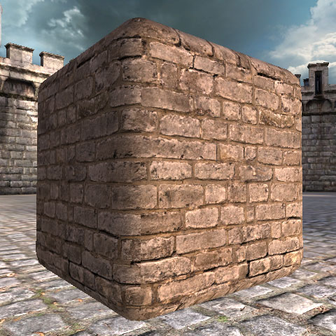
- Mobile Base Texture Tex Coords Source(移动设备基础贴图的贴图坐标源) - 这是当您对基础贴图取样时选择用作为顶点UV集合的地方。您至多可以从4个可用的UV集合中选择一个使用。除非在特殊情况下，否则一般您会使用第一个UV集合(TexCoords0)。
- Mobile Normal Texture(移动设备法线贴图) - 为这个材质设置法线贴图并启用基于每个像素着色的功能。其他的材质功能可能需要一个法线贴图，比如基于每个像素的高光。设置法线贴图可能会大大地影响材质的渲染性能。
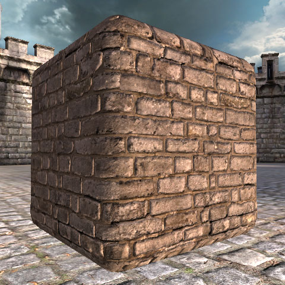
- Mobile Ambient Occlusion Source(移动设备环境遮挡源) - 启用烘焙的环境遮挡，它会缩放应用到网格物体上的天空光源(或环境光照)的量。如果您的网格物具有烘焙到顶点颜色中的环境遮挡数据，那么在这里您可以选择存储数据的颜色通道。目前，这个功能仅对于动态的骨架玩格物体有效。这个功能的性能消耗非常小。
- Mobile Allow Fog(移动设备允许雾) - 为这个材质启用基于距离的雾。您可以禁用这个选项来关闭不需雾的图元上的该功能。禁用这个功能可以提高渲染性能。
高光
这些设置允许您启用及配置高光。高光使得可以获得更加真实的光照模型。- Use Mobile Specular(使用移动设备高光) - 在这个材质上启用动态高光。对于具有光照环境的图元，对象的最显著的光照的方向将用作为高光。否则，场景中最亮的定向光源将用作为高光(还不支持点光源)。对于移动设备平台，甚至可以在没有被照亮的图元上启用高光。启用高光将带来严重的性能消耗。
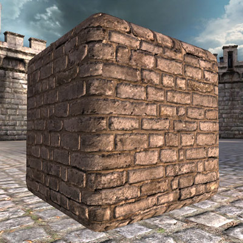
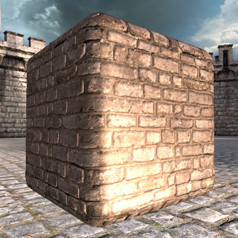
- Use Mobile Pixel Specular（使用移动设备像素高光） - 启用高质量的基于每个像素的高光。当启用高光并设置了法线贴图时，打开这个设置将会启用基于每个像素的高光。否则，将会使用基于每个顶点的高光。基于每个像素的高光的性能消耗远远大于基于每个顶点的高光。
- Mobile Specular Color(移动设备高光颜色) - 高光所使用的颜色。注意，将会自动地考虑光源的颜色，但是您可以使用这个选项获得您期望的高光。改变这个设置没有性能消耗。
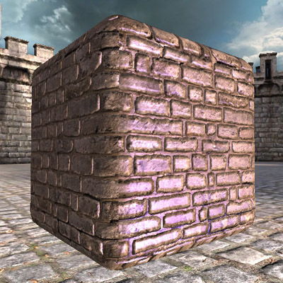
- Mobile Specular Power(移动设备高光次幂) - 设置高光的锐利清晰程度。值越高产生越锐利明显的高光，而值越小则产生广泛的缓和的高光。如果您正在使用基于每个像素的高光，那么通常您获得的高光会比使用基于每个顶点的高光更加锐利明显。改变这个设置没有性能消耗。

- Mobile Specular Mask(移动设备高光蒙板) - 有时可以使用该选项来把高光限制到一个图元的特定区域。您可以通过把高光蒙板数据描画到网格物体的顶点颜色、蒙版贴图或者通过简单地使用漫反射贴图中的一个通道作为蒙板来实现这个效果。同时，您可以选择让'Luminance(亮度)' 使用漫反射贴图的亮度值作为高光蒙板。默认情况下，不会为高光应用蒙板(常量)并且将统一地影响整个图元。启用一个高光蒙板将会带来一些性能影响。

自发光
这些设置用于自发光效果。自发光使得材质呈现出从它的表面产生光照的效果。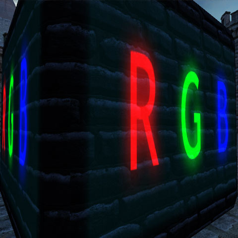
- Mobile Emissive Texture(移动设备自发光贴图) - 设置自发光贴图并启用自发光光照(当Mobile Emissive Color Source(移动设备自发光颜色源)设置为Emissive Texture（自发光贴图 )时)。自发光颜色不会受到光照的影响，基本上允许您的材质‘在暗处发光’。启用自发光光照进会带来较小的性能消耗。
- Mobile Emissive Color Source(移动设备自发光颜色源) - 选择自发光的源。
- Emissive Texture(自发光贴图) - 仅当一个贴图绑定到'Mobile Emissive Texture(移动设备自发光贴图)'属性时才启用自发光。
- Base Texture(基本贴图) - 启用自发光并使用基本贴图作为自发光颜色。
- Constant(常量) - 启用自发光并使用一个不变的颜色。当启用该项后，颜色值会设置在'Mobile Emissive Color(移动设备自发光颜色)'属性中。常量自发光在整个图元上产生均匀的自发光，但是它是自发光类型中性能消耗最小的一种。
- Mobile Emissive Color(移动设备自发光颜色) - 设置当'Emissive Color Source(自发光颜色源)为‘Constant（常量）’时自发光所使用的颜色'。改变这个设置没有性能消耗。
- Mobile Emissive Mask Source(移动设备自发光蒙板源) - 允许您随着图元表面缩放自发光分布。
- Constant(常量) - 禁用自发光蒙板。这是最廉价的一种方式，性能消耗低。
- Vertex Color (Channel)[顶点颜色(通道)] - 根据指定的顶点颜色通道来缩放自发光分布。
- Base Texture (Channel)[基本贴图(通道)] - 根据指定的基本贴图颜色通道来缩放自发光分布。
- Mask Texture (Channel)[蒙板贴图(通道)] - 根据指定的蒙板贴图颜色通道来缩放自发光分布。
- Normal Texture Alpha(法线贴图的Alpha通道) -根据法线贴图的alpha通道来缩放自发光分布。您必须提供有效的法线贴图才能使它正常工作。
环境
这些设置允许您打开环境映射并配置它的外观。环境反射通常用于使得物体看上去更加有光泽或更加具有金属感。- Mobile Environment Texture(移动设备环境贴图) - 启用球形的环境反射映射并设置要使用的环境映射贴图。如果没有绑定法线贴图，那么环境映射将基于每个像素进行计算，否则将基于每个顶点进行计算。环境映射给材质添加了很大的性能消耗。
- Mobile Environment Mask Source(移动设备环境蒙板源) - 允许您根据图元的表面缩放环境映射分布。
- Constant(常量) - 禁用环境贴图蒙板。这是最廉价的一种方式，性能消耗低。
- Vertex Color (Channel)[顶点颜色(通道)] - 根据指定的顶点颜色通道来缩放环境贴图分布。
- Base Texture (Channel)[基本贴图(通道)] - 根据指定的基本贴图颜色通道来缩放环境贴图分布。
- Mask Texture (Channel)[蒙板贴图(通道)] - 根据指定的蒙板贴图颜色通道来缩放环境贴图分布。
- Normal Texture Alpha(法线贴图的Alpha通道) -根据法线贴图的alpha通道来缩放环境贴图分布。您必须提供有效的法线贴图才能使它正常工作。
- Mobile Environment Map Amount(移动设备的环境贴图量) - 设置环境反射贴图的‘强度’, 或者环境贴图对最终图源颜色影响的多少。较大的值产生较亮的环境反射。改变这个设置没有性能消耗。
- Mobile Environment Blend Mode(移动设备环境贴图混合模式) -配置环境贴图如何同图元上的漫反射光照组合到一起。默认情况下，环境反射累加到漫反射光照上，但您也可以基于反射量的插值来配置使用环境贴图“替换”漫反射贴图颜色。改变这个设置没有性能消耗。
- Add(累加) - 环境反射将会累加到漫反射光照上，创建一个明亮的、有光泽的反射。这是默认情况。
- Lerp(线性插值) - 漫反射贴图和环境贴图根据环境反射量的值来混合到一起。这会产生更加具有金属感的效果，不会增加图元亮度。
- Mobile Environment Color(移动设备环境颜色) - 缩放环境贴图反射的颜色。改变这个设置没有性能消耗。
- Mobile Environment Fresnel Amount(移动设备环境贴图菲涅尔量) - 当这项设置为大于0的值时将会启用菲尼尔效应，它用于降低观察者正面看到的表面的反射率。这个值控制受到菲涅尔效应影响的环境贴图贡献量的百分比。通常菲涅耳效应可以产生更加真实的反射效果，但是启用这个功能将增加材质的性能消耗。
- Mobile Environment Fresnel Exponent(移动设备环境贴图的菲涅耳指数) - 设置当启用菲涅耳效应时菲涅耳效果的鲜明度。较高的值将需要更大的查看角度以便看到反射效果，较低的值将较广泛的反射表面。改变这个设置有较小的性能消耗。
轮廓光照
这些属性使您可以为您的材质启用轮廓光照效果。轮廓光照用于高亮显示您的物体的轮廓。- Mobile Rim Lighting Strength(移动轮廓光照的强度) - 当该项设为非零值时将会启用轮廓光照，并且会设置轮廓光照效果的强度。这个功能有严重的性能消耗。


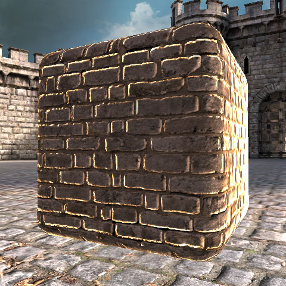
- Mobile Rim Lighting Exponent(移动设备轮廓光照指数) - 设置对象的边缘的轮廓光照的鲜明程度。较大的指数值将会使查看者正面看到较强烈的高光，而较小的值将会在表面上产生的效果会比较宽泛。改变这个设置通常没有太大的性能消耗。

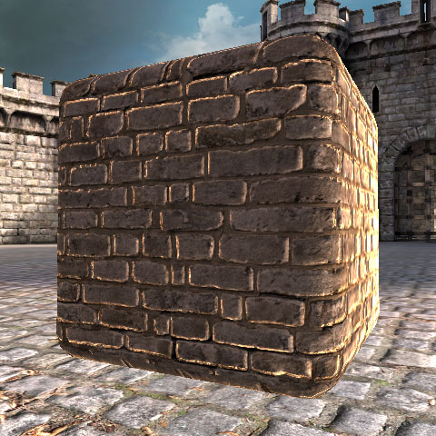
- Mobile Rim Lighting Mask Source(移动设备轮廓光照蒙板源) - 允许您缩放图元表面上的轮廓光照的分布。
- Constant(常量) - 禁用轮廓光照蒙板。这是最廉价的一种方式，性能消耗低。
- Vertex Color (Channel)[顶点颜色(通道)] - 根据指定的顶点颜色通道来缩放轮廓光照分布。
- Base Texture (Channel)[基本贴图(通道)] - 根据指定的基本贴图颜色通道来缩放轮廓光照分布。
- Mask Texture (Channel)[蒙板贴图(通道)] - 根据指定的蒙板贴图颜色通道来缩放轮廓光照的分布。
- Normal Texture Alpha(法线贴图的Alpha通道) -根据法线贴图的alpha通道来缩放轮廓光分布。您必须提供有效的法线贴图才能使它正常工作。
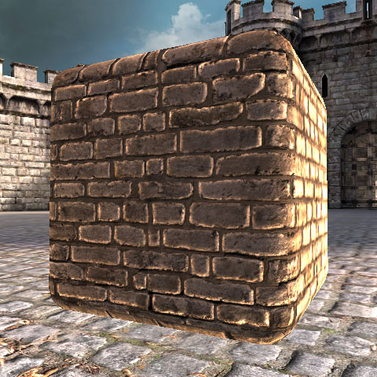
- Mobile Rim Lighting Color(移动设备轮廓光照的颜色) - 设置轮廓光照效果的颜色。改变这个设置没有性能消耗。
凹凸偏移
这些属性允许您启用‘凸凹偏移’效果，它可以模拟视差位移贴图采样的非常原始的形式。重要的是这可以使材质基于观察者的位置而呈现出不同3D深度的外观。注意凸凹位移需要在World Properties(世界属性)中应用。请参照这部分获得更多信息。- Use Mobile Bump Offset(使用移动设备凸凹偏移) - 启用凸凹偏移效果。*重要事项:* 当期用这个选项时必须设置蒙板贴图。 蒙板贴图的红色通道 将用于在每个贴图像素上对凸凹偏移高度进行采样。如果您想在移动设备平台上使用凸凹偏移效果，那么您一定要记得绑定一个蒙板贴图。启用这个功能具有非常高的性能消耗。
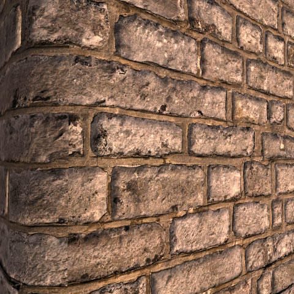

- Mobile Bump Offset Reference Plane(移动设备凸凹偏移参考平面) - 在贴图空间中指定近似的高度来应用这个效果。值0将会使得贴图变形得完全脱离表面，而值0.5（默认值)意味着表面的某些地方将凸起某些地方将凹陷。
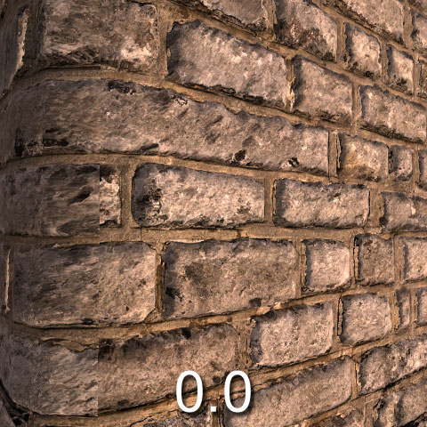


- Mobile Bump Offset Height Ratio(移动设备凸凹位移高度比率) - 用于和深度相乘。这个值越大，深度变化越极端。一般这个值的范围是 0.02 到 0.1。

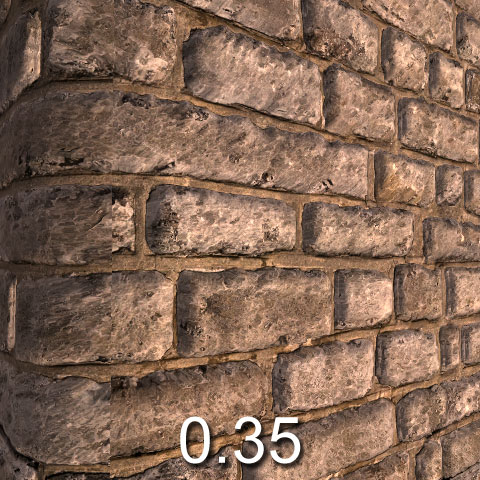
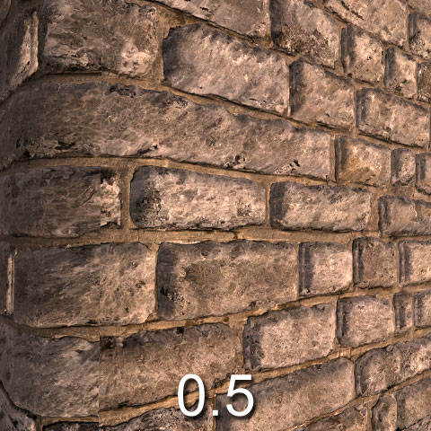
蒙板
蒙板贴图是一种由其他移动设备材质功能使用的通用贴图，比如凸凹偏移或 自发光/环境贴图 缩放。仅当另一个功能需要它时启用它就可以。 Mobile Mask Texture(移动设备蒙板贴图) - 设置该贴图作为蒙板贴图。蒙板贴图的各种应用根据在这个材质上启用的其他功能的不同而不同。存储在蒙板贴图中的信息有： 凸凹偏移量、细节贴图混合因数、自发光/环境贴图/轮廓光照 蒙板。 Mobile Mask Texture Tex Coords Source(移动设备蒙板贴图坐标源) - 选择对蒙板贴图进行采样时所使用的顶点贴图坐标集合。您至多可以从4个可用的UV集合中选择一个使用。贴图混合
这些设置允许您通过把贴图和您的材质的基本贴图进行混合来附加贴图应用到材质上。它也可以通过使用贴图变换属性来使得第二个贴图产生动画。- Mobile Detail Texture(移动设备细节贴图) -设置这个材质所使用的‘细节贴图’。细节贴图通常用于贴图间的混合，或用于把一个带动画的贴图和基础贴图混合。当设置了细节贴图时，它将会使用了'Mobile Texture Blend Factor Source(移动设备贴图混合因数源)'属性中配置的值来和基本贴图相混合。设置细节贴图将会消耗一些性能，因为它引入了额外的需要进行采样的贴图。


- Mobile Detail Texture Tex Coords Source(移动设备细节贴图坐标源) - 选择用于细节贴图的顶点贴图坐标集。注意，默认情况下，网格物体中的第二个UV集合用于细节贴图。您可以从那4个可用UV集合中选择一个进行应用。改变这个设置通常没有严重的性能消耗。
- Mobile Texture Blend Factor Source(移动设备贴图混合因数源) - 选择基本贴图和细节贴图混合时所使用的'alpha'值的来源。您可以选择存储在网格物体中的顶点颜色，或者选择使用 'Mobile Detail Texture(移动设备细节贴图)'属性的单独的贴图蒙板。通常使用单独的细节贴图作为蒙板比使用顶点颜色更加昂贵。

- Lock Color Blending(锁定颜色混合) - This is an advanced feature that allows this material to use texture blending even when forcibly disabled by the platform's system settings. 这是一个高级功能，使得这个材质可以使用贴图混合功能，即时平台的系统设置强制禁用了该功能也仍能使用。您可以把它看作为创建特殊材质时用于覆盖系统设置的功能。一般，您应该永远别不要打开这个设置。
颜色混合
这些设置使您可以应用描画的顶点颜色到您的移动设备材质上，或者应用单独的均匀的颜色缩放比例到整个材质上。 Use Mobile Uniform Color Multiply(使用移动设备均匀颜色乘法) - 当启用这项时，将会通过‘Default Uniform Color（默认均匀颜色）’属性中指定的值来缩放材质的颜色。启用这项有非常小的性能消耗。 Default Uniform Color(默认均匀颜色) - 设置当启用了‘Use Mobile Uniform Color Multiply(使用移动设备均匀颜色乘法)’时用于缩放材质的颜色。改变这个设置没有性能消耗。 Use Mobile Vertex Color Multiply(使用移动设备顶点颜色乘法) - 打开顶点颜色缩放功能。当您已经向网格物体中描画了顶点颜色并想在渲染中使用这些顶点颜色时或者当使用了具有顶点颜色动画的粒子系统时，这项是有用的。启动这项功能仅有很小的性能消耗。如果您尝试将该选项和没有顶点颜色数据的网格物体结合使用，那么该材质将会回滚为闪耀鲜明的粉色，以便可以轻松地识别问题。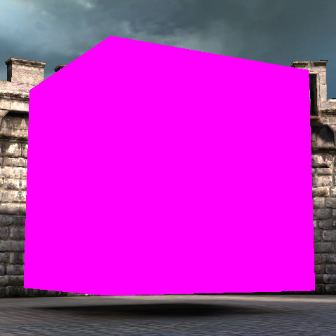
Mobile Color Multiply Source（移动设备颜色乘法源） - 该选项允许用户操作颜色混合的应用位置。假设一个简单的材质，使用左侧贴图作为Base Texture，使用右侧贴图为Mask Texture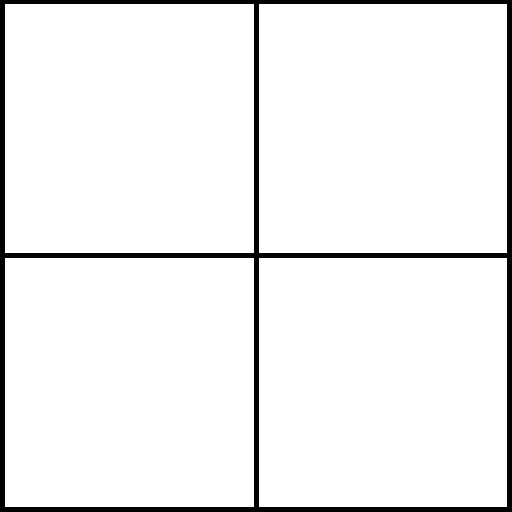
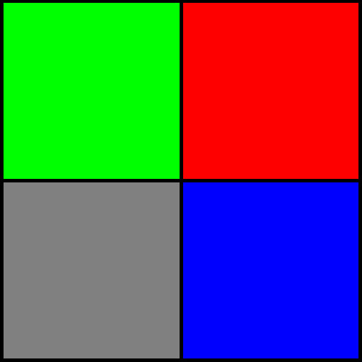
如果您启用颜色乘法选项，并从该下拉菜单中选择一个通道，那么您可以操作该材质的某些区域。左边的图片没有混合效果，下一个图片结合使用了默认的均匀颜色和Mask Textures Red Channel(蒙板贴图红色通道)，而最后一个图片结合使用了默认均匀颜色和Mask Textures Blue Channel(蒙板贴图蓝色通道)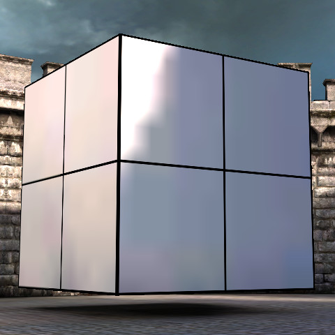
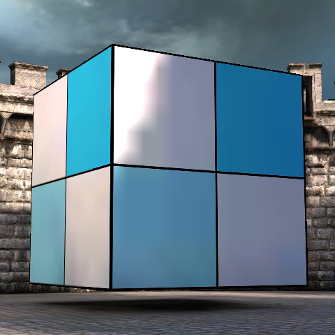
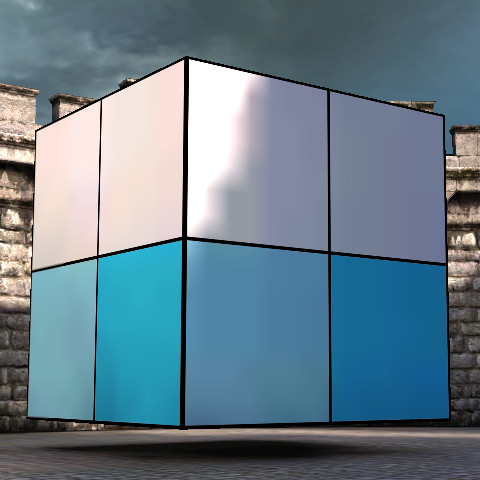
贴图变换
这些设置允许您使您的材质产生动画！ 您可以动态地平移、旋转及缩放基本贴图或细节贴图的贴图UVs。您也可以给贴图UVs应用一个固定的缩放比例，甚至可以应用一个简单的正弦振动。- Use Mobile Texture Transform(使用移动设备贴图变换) - 如果为Ture，将启用这个贴图的变换效果。当启用这个功能时有中等的性能消耗。
- Mobile Texture Transform Target(移动设备变换目标) -选择要变换那个贴图的UV集合，或者是基本贴图或者是细节贴图。
- Transform Center X(X轴变换中心) - 指定任何旋转或缩放变换在X轴上变换中心。
- Transform Center Y(Y轴变换中心) - 指定任何旋转或缩放变换在Y轴上的变换中心。
- Panner Speed X(X轴上的平移速度) - 指定贴图在X轴上的平移速度。
- Panner Speed Y(Y轴上的平移速度) - 指定贴图在Y轴上的平移速度。
- Rotate Speed(旋转速度) - 指出了贴图的旋转速度。正值代表顺时针旋转。负值代表逆时针旋转。
- Fixed Scale X(X轴上的固定缩放比例) - 指出贴图在X轴上应该缩放的量。
- Fixed Scale Y(Y轴上的固定缩放范围) -指出贴图在Y轴上应该缩放的量。
- Sine Scale X(X轴上的正弦缩放比例) -指出正弦曲线震荡效果在X轴上缩放正弦曲线的量。
- Sine Scale Y(Y轴上的正弦缩放比例) -指出正弦曲线震荡效果在Y轴上缩放正弦曲线的量。
- Sine Scale Frequency Multiplier(正弦缩放频率乘数) - 频率乘数，和任何震荡效果协同使用。
顶点动画
这些属性可以用于配置特殊的顶点动画效果。一般，这些属性通过简单的参数化的动画效果来程序化地使得植被、旗帜或布料产生动画。和骨架动画相比，这种类型的动画性能消耗非常低，因为它是由图形硬件执行的。- Use Mobile Wave Vertex Movement(使用移动设备波动顶点运动) - 为这个材质启用基于GPU的顶点动画。当启用这项时将会产生严重的性能消耗。
- Mobile Tangent Vertex Frequency Multiplier(移动设备切线顶点频率乘数) - 这个运动和从对象的中心线到顶点的向量垂直。它提供了一些从一侧到另一侧的正弦运动来模拟(针对树木、旗帜等)的风。值1意味着1秒后运动将会循环。
- Mobile Vertical Frequency Multiplier(移动设备垂直频率乘数) - 和切线运动类似，这个设置提供了自上而下的沿着Z-轴的正弦运动。值1意味着1秒后运动将会循环。正常情况下，这个值和切线顶点频率乘数保持一个偏移量，从而避免出现不断循环的外观。
- Mobile Max Vertex Movement Amplitude(移动设备最大顶点运动振幅) - 从垂直正弦曲线的任一切线的峰值处到水平位置的距离。这个值和描画到网格物体上的顶点颜色的 红色 通道相乘。_如果没有描画顶点颜色，那么将不会应用运动。_
- Mobile Sway Frequency Multiplier(移动设备摇摆频率乘数) - 通过使用对象的y-轴(变换到世界空间中)和对象位置，摇摆运动提供了完整的对象旋转，比如，模拟树荫的摇曳。这个乘数用于加速或减慢一个标准的1秒运动循环。
- Mobile Sway Max Angle(移动设备摇摆最大角度) - 正弦曲线顶部可以摇摆偏移的最大角度。这个值和描画到网格物体上的顶点颜色的 绿色 通道相乘。_如果没有描画顶点颜色，那么将不会应用运动。_
平整
配置平整功能
贴图平整功能有几个必须为您的游戏进行正确设置的.ini配置值。它们是：[MobileSupport] bShouldFlattenMaterials=True这启用了保存平整的贴图到新资源的功能。在没有启用这个功能的情况下，将不会生成平整的贴图，即时在材质的属性中启用了'Auto Flatten Mobile(自动平整移动设备)'功能。
[MobileSupport] FlattenedTextureResolutionBias=1这项为平整的贴图设置分辨率偏移。这个值越高，生成的贴图的分辨率越低。比如，当设置FlattenedTextureResolutionBias 为1时，一个具有最大贴图尺寸为512x512的图形网络材质将会平整为一个256x256的贴图。
Lightmass和移动设备平台材质
修改光照贴图
您可以通过在您的关卡的WorldInfo（世界信息）属性中启用 'Use Normal Maps for Simple Lightmaps(使用法线贴图作为简单的光照贴图)'选项来把法线贴图光照烘焙到Lightmass生成的光照贴图中。只需要确保在您的材质的着色器网络部分已经配置了一个法线贴图即可，以便Lightmass可以找到它。 另外，您可以通过StaticMeshComponent中的MobileSettings设置组的SimpleLightmapModificationTexture 和 SimpleLightmapModificationFunction 来使用一个贴图修改法线贴图（来添加基于每个实例的尘埃等）。
生成移动设备着色器
其他注意事项
- 着色器是在设备启动过程中进行编译的，这将会大大地影响您的游戏的引导时间。使用不同的材质设置组合将会导致编译独特的着色器。注意，两个相同的材质，只是所具有的贴图不同，那么不会导致编译两个着色器，将仅编译一个。
- 仍然遵循某些材质属性，比如
BlendMode(混合模型)和LightingModel(光照模型)，但是有一些限制。您可以正常地创建半透明或累加型材质。同样，您也仍然可以使用usage标志来在decal材质、粒子材质等之间进行描绘。但是和正常的虚幻引擎中的材质一样，您必须确保正确地配置了这些设置。
- 请记住目前动态光照功能在移动设备平台上是非常有限的。移动设备平台可以很好地支持定向光源，并且一些天空光照/光照环境功能可以在角色上正常工作。烘焙到光照贴图的静态光照可以很好地工作。但是，不支持很多其它可能的光照组合及阴影设置。比如，仅在特殊情况（光照环境影响）下支持影响一个单独图元的多个直接光源。
- 目前，总是会为动态照亮的骨架网格物体启用天空光源。这些网格物体使用光照环境来计算
Up和Down颜色，然后使用在您的材质中配置的设置进行渲染。
- 移动设备上支持雾，但是它的工作原理和其他的平台是不同的。不必使用雾体积，而是使用在关卡的世界属性中基于距离的针对特定关卡的各种雾设置选项。请参照基于每个关卡的渲染设置获得更多信息。独立的材质通过设置
Allow Mobile Fog(允许移动设备雾)选项来选择是否被雾笼罩。
- 移动设备使用SimpleLightmaps（简单的光照贴图）(其内部没有烘焙定向光照)。简单的光照贴图具有固定的颜色缩放比例2.0，这意味着光照贴图亮度不能高于满反射贴图亮度的2倍。
- 使用移动设备开关创建的材质在编辑器中将不能显示这些开关设置的效果。这是因为编辑器使用Direct3D，而移动设备使用OpenGL ES2并且需要不同的着色器来显示这些效果。请使用移动设备预览器来查看您的材质，这样它们将呈现出在移动给设备上显示的效果。